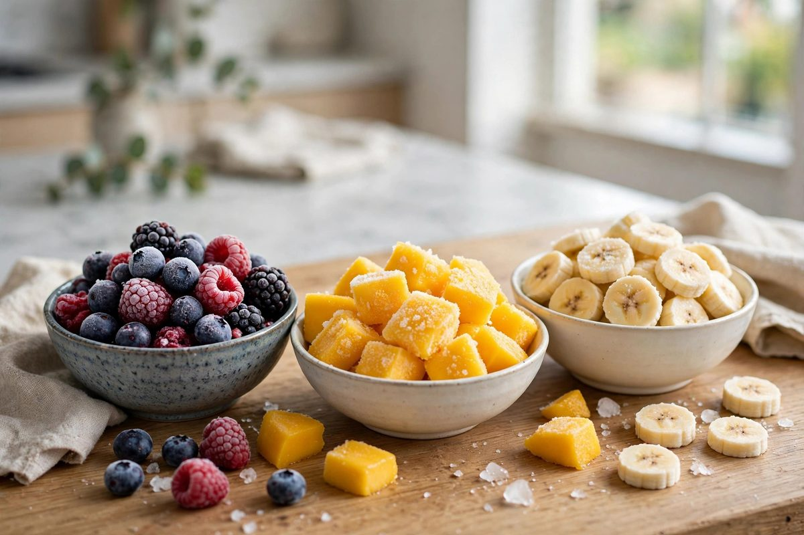

Home » Guides
Frozen Fruit Guide

Frozen fruit is the secret ingredient in most good smoothies. It makes the drink thick and cold without ice, it is cheap and available all year, and it is often more nutritious than fresh fruit that has spent days in transport. This guide explains why frozen fruit works so well, which fruits to buy frozen, how to freeze your own fruit at home, and how to store it properly.
Why frozen fruit works
Fruit is frozen at peak ripeness, usually within hours of picking, which locks in flavour and nutrients. Fresh fruit, by contrast, may be picked unripe and spend days in transport and storage, losing flavour and vitamins along the way. Frozen fruit is also cheaper out of season, and it reduces waste, because you use only what you need and the rest stays frozen. For smoothies, frozen fruit has a practical advantage too: it thickens and chills the drink, so you do not need ice, which can water a smoothie down.
The best frozen fruits
The best frozen fruits for smoothies are berries, mango, pineapple, banana, and cherries. Frozen berries are widely available and blend quickly. Frozen mango is sweet and creamy. Frozen pineapple adds sharpness. Frozen banana, bought ready-frozen or frozen at home, is the best thickener. Frozen cherries taste like a dessert. Avoid frozen fruit with added sugar or syrup: check the label and choose fruit with no added ingredients. Mixed frozen fruit bags are convenient, but check what is in them, because some contain a lot of melon, which is mild and watery.
Freezing your own fruit
Freezing fruit at home is easy and saves money. Peel and slice bananas, wash and hull strawberries, and cut mango and pineapple into chunks. Spread the pieces in a single layer on a baking tray lined with baking paper, and freeze for two to three hours until solid. Then transfer the pieces to a labelled freezer bag and return them to the freezer. Freezing in a single layer first stops the pieces sticking together, so you can take out exactly what you need. Home-frozen fruit keeps for up to three months.
Storing and using frozen fruit
Store frozen fruit in sealed bags or containers, with the air squeezed out to prevent freezer burn. Label each bag with the fruit and the date, and use the oldest first. Use frozen fruit straight from the freezer in smoothies: there is no need to defrost it. If you do defrost it for another use, use it the same day and do not refreeze it. A blender with at least 600 watts handles frozen fruit best, but a smaller blender works if you add the liquid first and blend in stages.
Freezing your own harvest
Freezing your own fruit is a good way to save money and reduce waste. When fruit is cheap and plentiful, buy extra and freeze it in portions. Wash and chop the fruit, freeze it in a single layer on a tray, then transfer it to labelled bags. A freezer full of home-frozen fruit means a smoothie is always possible, whatever the season. It is also a good way to use fruit that is about to go soft, so nothing is thrown away. Label each bag with the fruit and the date, and use the oldest first, so your freezer stays organised and nothing is forgotten.
Frequently Asked Questions
Is frozen fruit as healthy as fresh fruit?
Yes, often healthier. It is frozen at peak ripeness, so it keeps its vitamins well, and it has no added sugar if you check the label.
Do I need to defrost frozen fruit for smoothies?
No. Use it straight from the freezer. It makes the smoothie thick and cold without ice.
How long does frozen fruit keep?
Up to three months for the best flavour, and up to six months if stored well in sealed bags.